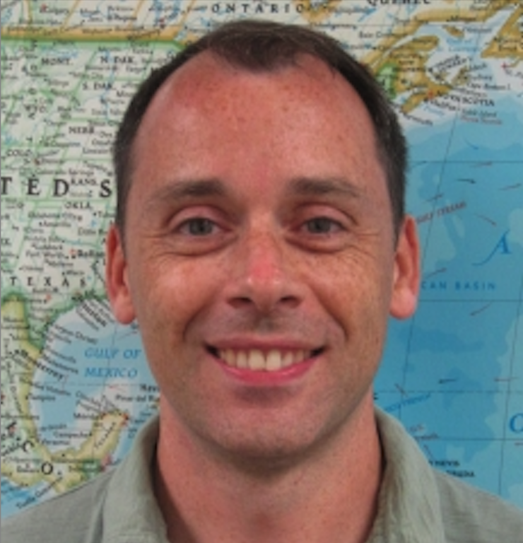

| Day 1: Wednesday April 20, 2022 | Day 2: Thursday April 21, 2022 |
|---|---|
|
10:00 AM Welcome (Zoom) |
10:00 AM Leaderboard check-in, additional training, and ongoing mapping (Zoom) |
|
10:15 AM Keynote: "Mapathon and the overall importance of humanitarian mapping and Earth Day" - UCLA Geographer's Association & SC Mappers (Zoom) |
10:15 AM Keynote: "Creating data that matters with YouthMappers" - Richard Hinton  Richard Hinton is the manager of the Spatial Analysis Laboratory at the GWU Department of Geography. Mr. Hinton is also an instructor with the Dept of Geography teaching courses on Cartography & GIS as well as Open Source GIS. He has been with YouthMappers since its inception and is a co-founder of TeachOSM. In May 2015 Mr. Hinton deployed to Nepal with Shelter Cluster as an Information Officer to assist with the international earthquake response. Mr. Hinton has successfully worked as a cartographer and GIS Specialist in both the public and private sectors over the past 20 years. Lightning Talks 10:40 AM
Erik Huisman
Bowen Wang
Title: Projecting the Impact of Anthropogenic Climate Change on Water Supply in California |
|
10:45 AM Mapathon Kickoff (Zoom) |
|
| In-person activities | |
|
1:00 PM - 4:00 PM
Join us in-person to claim prizes!
Where to find us:
|
1:00 PM - 4:00 PM
Join us in-person to claim prizes!
Where to find us:
|
|
4:00 PM Day 1 wrapup and leaderboard reveal |
4:00 PM Mapathon Leaderboard Reveal |